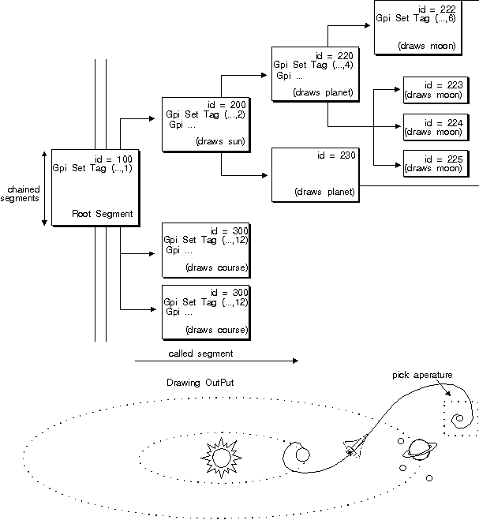

When a called segment is picked, correlation data is returned also for all segments above it in the hierarchy, up to and including the root segment. The following figure is an example of a picture drawn from a complex segment chain with called segments.
Multiple Hits from a Called Segment
Two separate items, called from different portions of the segment chain, intersect the pick aperture. Each has a unique segment identifier and tag, so there are two hits.
For called segments, the group of segment-tag pairs constitutes a single hit. You can limit the number of segment and tag pairs returned for each hit using the maximum depth parameter, just as you can limit the total number of hits returned to you using the maximum number of hits parameter. The following figure shows two examples of the alSegTag data structure from the previous figure, for two different lMaxDepth values.
┌─ ┌────────┐ ──┐ ┌─── ┌────────┐ ──┐
│ │id = 300│ 0│ │ │id = 300│ 0│
│ ├────────┤ │ │ ├────────┤ │
│ │tag = 12│ 1│ │ │tag = 12│ 1│
┌─ ──┤ ├────────┤ │ │ ├────────┤ │
│ │ │id = 100│ 2│ │ │id = 100│ 2│
│ │ ├────────┤ │ │ ├────────┤ │
│ │ │tag = 1 │ 3│ 2 actual │ │tag = 1 │ 3│
│ ╞═ ├────────┤ ├── hits ──┤ ├────────┤ ├─ ─┐
│ │ │id = 222│ 4│ returned │ │ 0 │ 4│ │
│ │ ├────────┤ │ │ ├────────┤ │ │
IMax │ │tag = 6 │ 5│ │ │ 0 │ 5│ │
hits─ ──┤ ├────────┤ │ │ ├────────┤ │ │
= 3 │ │id = 220│ 6│ │ │ 0 │ 6│ │
│ │ ├────────┤ │ │ ├────────┤ │ │
│ │ │tag = 4 │ 7│ │ │ 0 │ 7│ │
│ ╞═ ├────────┤ ══╡ │ ┌─ ├────────┤ ══╡ │
│ │ │ ? │ 8│ │ │ │id = 222│ 8│ │
│ │ ├────────┤ │ │ │ ├────────┤ │ │
│ │ │ ? │ 9│ IMax │ │ │tag = 6 │ 9│ │
└─ ──┤ ├────────┤ ├─ Depth │ │ ├────────┤ │ │
│ │ ? │ 10│ = 2 │ │ │id = 220│ 10│ │
│ ├────────┤ │ │ │ ├────────┤ │ │
│ │ ? │ 11│ IMax │ │ │tag = 4 │ 11│ IMax
└─ └────────┘ ──┘ Depth│─┤ ├────────┤ ├─ hits
= 4 │ │ │id = 200│ 12│ = 3
│ │ ├────────┤ │ │
│ │ │tag = 2 │ 13│ │
│ │ ├────────┤ │ │
│ │ │id = 100│ 14│ │
│ │ ├────────┤ │ │
│ │ │tag = 1 │ 15│ │
└─└─ ├────────┤ ══╡ │
│ ? │ 16│ │
├────────┤ │ │
│ ? │ 17│ │
├────────┤ │ │
│ ? │ 18│ │
├────────┤ │ │
│ ? │ 19│ │
├────────┤ ├─ ─┘
│ ? │ 20│
├────────┤ │
│ ? │ 21│
├────────┤ │
│ ? │ 22│
├────────┤ │
│ ? │ 23│
└────────┘ ──┘
alSegTag Data Structure for Different lMaxDepth Values
Unused segment-tag pairs for actual hits are set to 0 in the alSegTag array.
There are two major reasons for the PM to provide this capacity. The first is the consideration of application storage. If your application is a graphics package, for example, providing extensive design capabilities to an end user, the user's drawing may be very complex with 10 or more levels of segment calling. The data returned from a single hit could require an alSegTag array so large the data overruns the application storage you had reserved. By setting a maximum calling depth, your application can reserve the correct amount of storage.
The second consideration is the knowledge that your application's user is interested only in a certain level of calling depth. Many users will be interested only in the topmost called segment, because it usually is the segment containing the functions that performs the actual drawing.